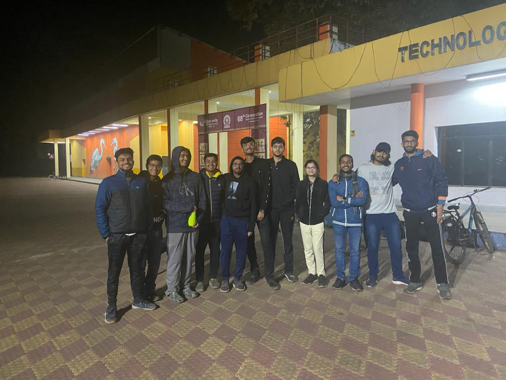
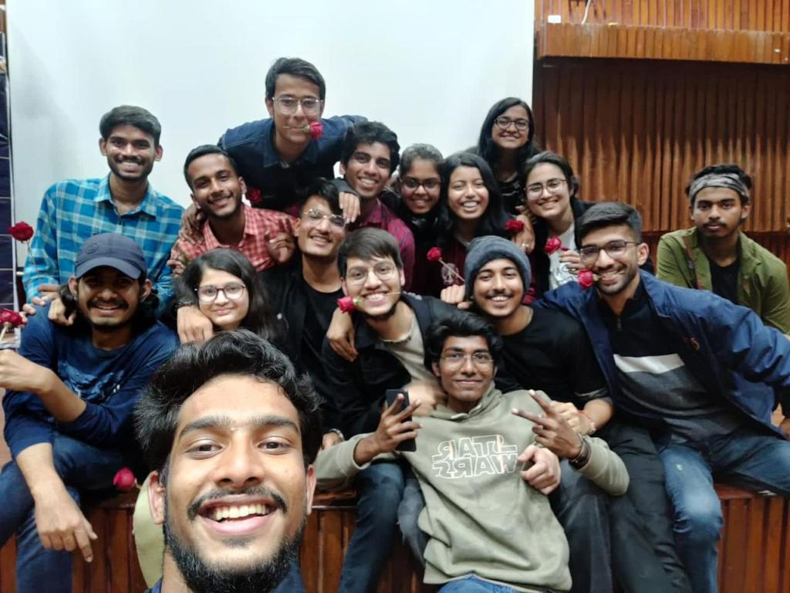
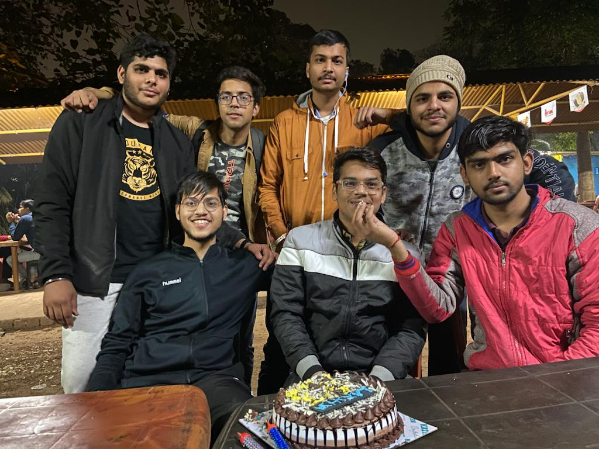

 it is a very nice place to enjoy with friends. this place has a very good environment and very soothing atmosphere. this is a famous place to celebrate birthdays of friends and do celebrations. i have a lot of memories associated with this place and it is my one of favourite places of iit kgp.
 this auditorium is a part of the main building where a lot of events are conducted. most of the communique events are conducted here and i have associated good memories with this auditorium. this was the place where i recieved my global mun award and after which i had a lot of fun with my communique friends.
 it is a very nice place to enjoy with friends. this place has a very good environment and very soothing atmosphere. this is a famous place to celebrate birthdays of friends and do celebrations. i have a lot of memories associated with this place and it is my one of favourite places of iit kgp.